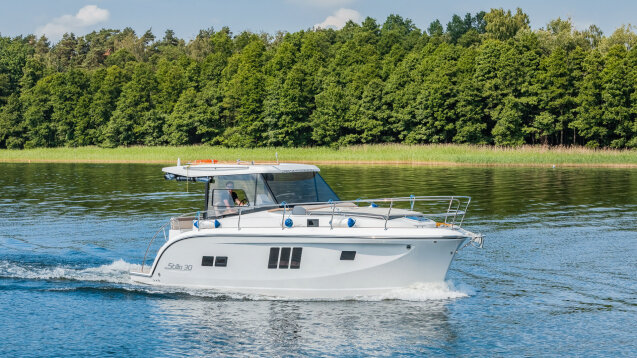
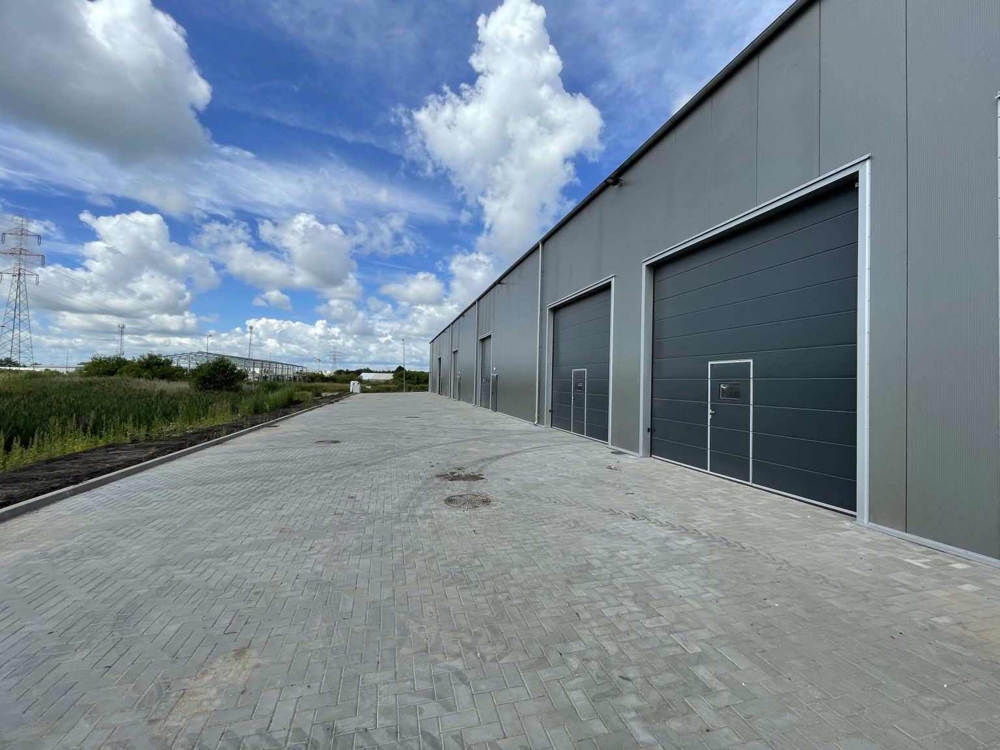

Poczuj Wolność na Wielkich Jeziorach Mazurskich
Stillo 30 to uznany król mazurskich houseboatów. Jednostka łączy doskonałe właściwości nautyczne z przestronnością luksusowego apartamentu. Szerokie półpokłady, zadaszony kokpit z materacami do opalania oraz platforma kąpielowa z drabinką sprawiają, że wypoczynek na wodzie staje się czystą przyjemnością.
Dzięki dwóm sterom strumieniowym (na dziobie i rufie) oraz echosondzie z mapami batymetrycznymi, manewrowanie w ciasnych portach Giżycka, Mikołajek czy Sztynortu jest intuicyjne i bezpieczne nawet dla osób bez wcześniejszego doświadczenia.
- 3 dwuosobowe, zamykane kajuty z pełną wysokością stania
- Łazienka morska z ciepłą wodą, prysznicem i WC elektrycznym
- Wydajne ogrzewanie Webasto zapewniające ciepło w chłodniejsze noce
- W pełni wyposażony kambuz: lodówka, kuchenka gazowa, zlew, naczynia
- Panel solarny i akumulatory hotelowe – pełna niezależność energetyczna na dzikich bindugach
- Audio Bluetooth & Smart TV w mesie jachtu
Trasy Bez Ograniczeń
Niskie zanurzenie pozwala wpłynąć w najbardziej urokliwe zakątki jezior Kisajno, Dargin, Śniardwy i Mamry.
Pełne Szkolenie
Nasz instruktor przeprowadzi z Tobą szkolenie teoretyczne i praktyczne przed wypłynięciem.
Materace Słoneczne
Wygodny pokład dziobowy z materacami do zażywania kąpieli słonecznych.
Wsparcie Bosmana
Serwis na szlaku 24/7 – w razie potrzeby podpływamy łodzią serwisową.
Stillo 30 w Całej Okazałości


Parametry Jachtu Stillo 30
| Parametr | Wartość | Wyposażenie |
|---|---|---|
| Długość całkowita | 9,10 m | Duża platforma kąpielowa z drabinką |
| Szerokość | 3,25 m | Bardzo stabilny kadłub spacerowy |
| Zanurzenie | 0,55 m | Bezpieczne cumowanie rufą do brzegu |
| Liczba koi / osób | 6 + 2 (3 zamykane kajuty + mesa) | Pościel hotelowa w cenie czarteru |
| Silnik | Stacjonarny Diesel / zaburtowy o wysokiej kulturze pracy | Ekonomiczne spalanie ok. 2,5–3,5 l/h |
| Stery strumieniowe | Dziobowy + Rufowy | Sterowanie joystickami na pulpicie |
FAQ — Czarter Houseboat Giżycko
Zgodnie z polskim prawem jachty motorowe o prędkości konstrukcyjnej ograniczonej do 15 km/h i mocy do 75 kW można prowadzić bez żadnych uprawnień. Przed wydaniem jachtu przeprowadzamy kompleksowe szkolenie na wodzie.
Portem macierzystym jest nowoczesna marina w Giżycku z bezpiecznym parkingiem dla aut załogi. Wydania jachtu odbywają się zazwyczaj od godz. 15:00, a zdania do godz. 10:00.
Zarezerwuj czarter jachtu Stillo 30
Wybierz preferowany termin rejsu – sprawdzimy dostępność kalendarza.